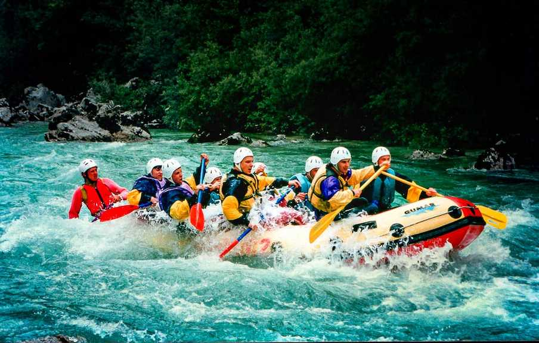

To provide safe, exhilarating, and professionally guided whitewater rafting adventures that connect individuals and groups with the beauty and splendor of natural river ecosystems.
Ridge Whitewater Rafting was established on July 27, 1998 by John H. Ridge. Mr. Ridge (an experienced river guide himself) prioritized safety and efficiency, adopting self-bailing rafts to improve maneuvers and keep passengers from falling overboard. Ridge (company) quickly became
known for its knowledgeable guides and stringent safety practices. The company offers diverse trips catering to various skill levels, attracting both beginners and seasoned rafters. By the early 2000s, Ridge Whitewater Rafting became a respected and sought-after company for remarkable rafting adventures.